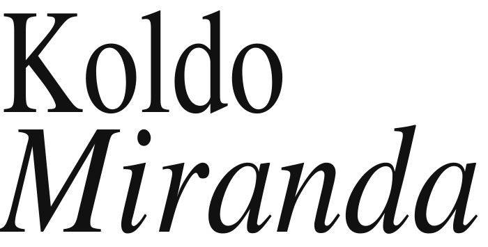
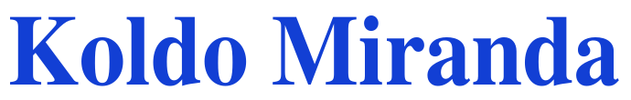
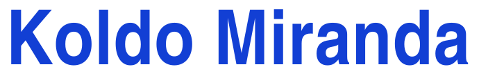
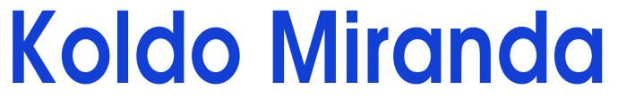

Una persona, tres interpretaciones. Cada sistema se aplica a la tripleta existente: narrar, comparar y elegir. Todas son propuestas conceptuales pendientes de validación.
NARRARKOLDO MIRANDA


Margen y memoria
Una firma de lectura: tipografía romana, cursiva y un margen continuo. Dos capítulos conservan su propia voz.
Ver web completaMonocromo · reducción real
24 / 40 / 96 px



Exploración tipográfica previa
Estudios de contraste y densidad; la firma seleccionada aparece arriba. Son alternativas del mismo cliente.
COMPARARKOLDO MIRANDA

Contrapunto
Dos pesos equivalentes. Archivo en cursiva para La Favorita; tipografía directa para Gallinas y Valientes.
Ver web completa#bd3425
#f3cbbd
#d0ed69
#161714
Monocromo · reducción real
Exploración tipográfica previa
Estudios de contraste y densidad; la firma seleccionada aparece arriba. Son alternativas del mismo cliente.
ELEGIRKOLDO MIRANDA

Atlas abierto
Dos marcos independientes organizan la elección. La misma medida, dos entradas; ninguna ocupa el primer puesto.
Ver web completaMonocromo · reducción real
Exploración tipográfica previa



Estudios de contraste y densidad; la firma seleccionada aparece arriba. Son alternativas del mismo cliente.
Las firmas de Koldo Miranda son una voz editorial para esta demo; no afirman una marca comercial compartida por La Favorita y Gallinas y Valientes. Las referencias de prensa siguen siendo remotas, atribuidas y sin permisos de publicación confirmados. Las ilustraciones locales son originales y abstractas.